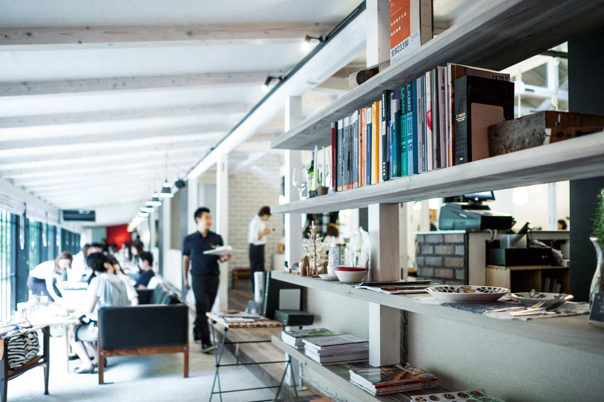
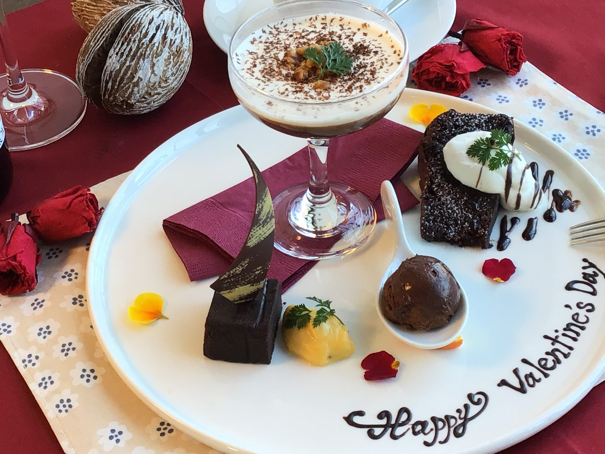
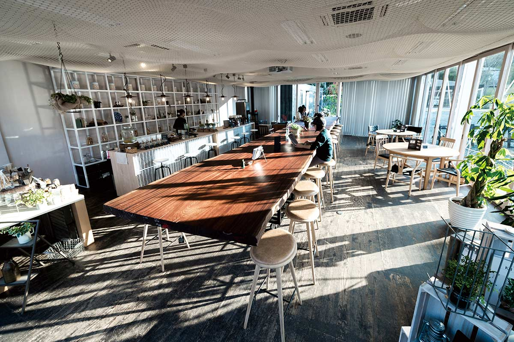
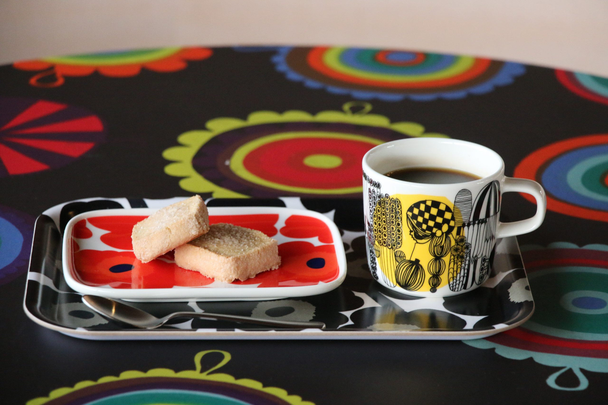
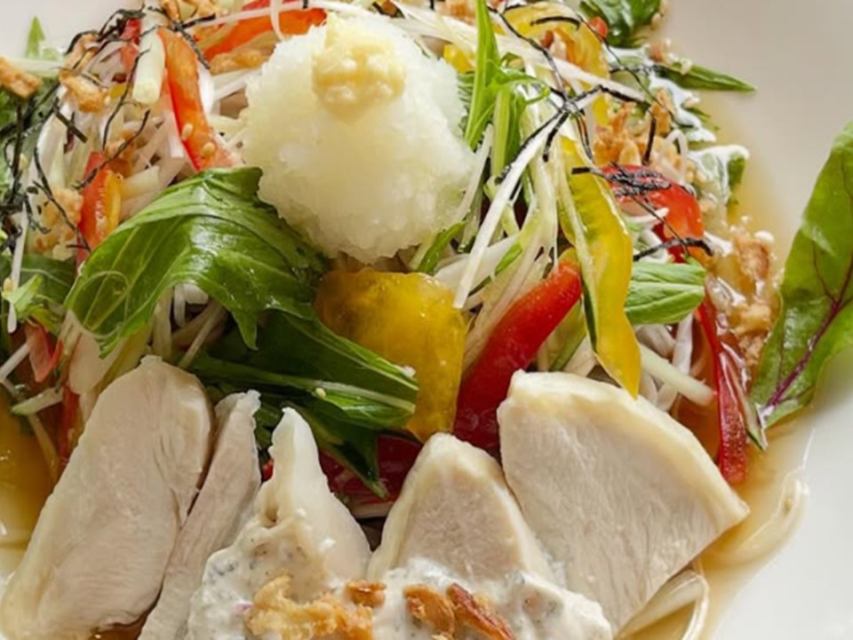

DLoFre's Cafe
Cafe & Sweets築70年の古民家をリノベーションした空間。憧れの北欧名作家具に腰掛けながら、体に優しいランチや自家製スイーツをゆったりと楽しめます。
SCANDINAVIAN LIFESTYLE
都田にある「ドロフィーズキャンパス」
北欧家具や美しい自然に囲まれた、心豊かになる5つのランチ＆カフェをご紹介します。

築70年の古民家をリノベーションした空間。憧れの北欧名作家具に腰掛けながら、体に優しいランチや自家製スイーツをゆったりと楽しめます。

「空間と素材と料理」をテーマにした大人のためのダイニング。カフェタイムには、美しい食器と共に上質なスイーツやドリンクを提供しています。

北欧スローフードをカジュアルに楽しめるデリ。テイクアウトして広大なドロフィーズキャンパスのお気に入りの場所（ベンチやガーデン）でピクニック気分も味わえます。

天竜浜名湖鉄道「都田駅」構内にあるカフェ。マリメッコのファブリックとヴィンテージ感が融合した空間で、サイフォンコーヒーと手作りクッキーを楽しめます。

ドロフィーズキャンパス内で味わえる、本格的で体に優しいお蕎麦。和の趣と北欧の空気感が交差する空間で、ホッと心落ち着くランチタイムをお楽しみいただけます。